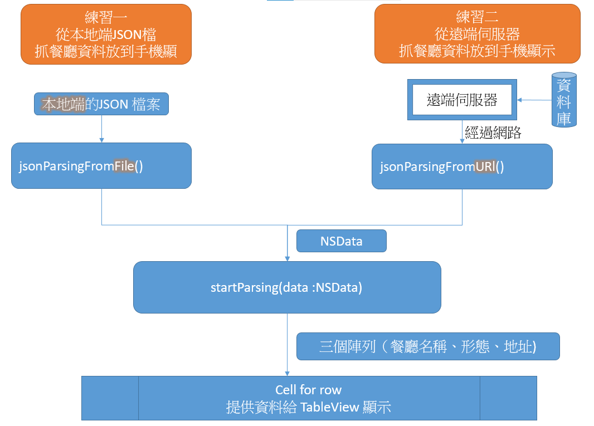
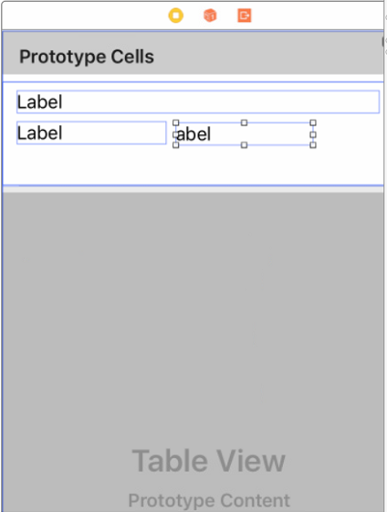
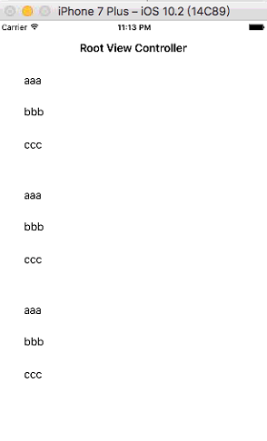
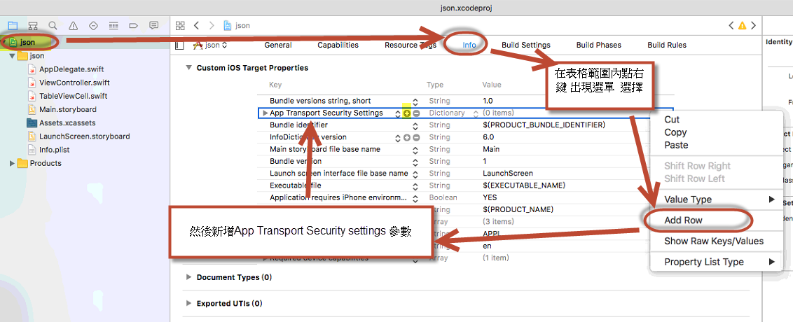
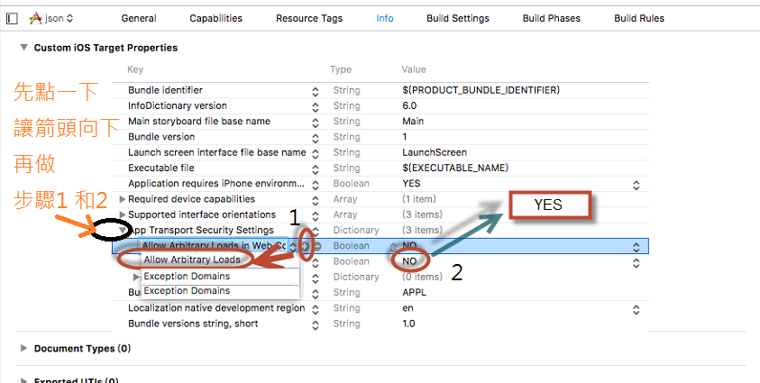
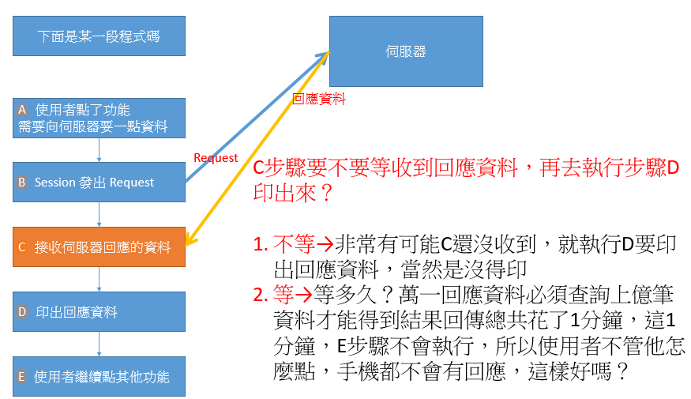
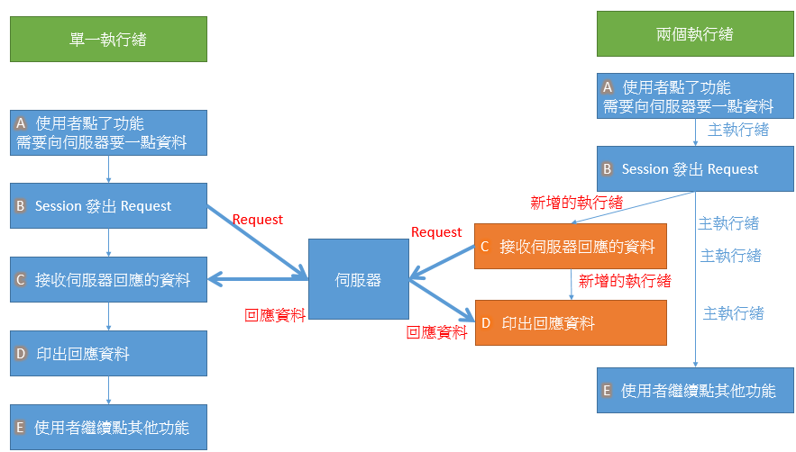
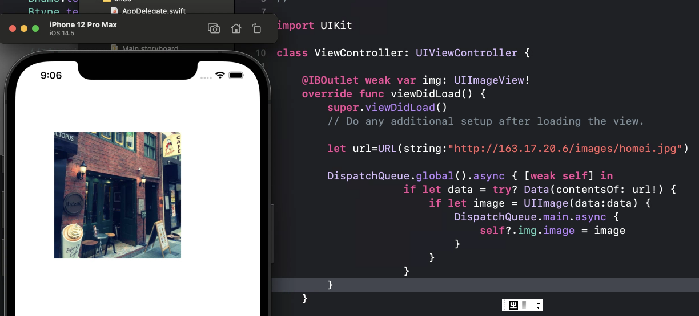
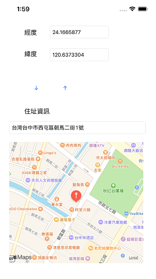

甚麼是json
資料交換格式
在日常生活中，人與人之間的交流需要彼此都聽得懂得語言。
語言有其規則名詞接著動詞是一種意思，反過來又是一種意思，
例如 我打 VS 打我 意義就不一樣，所以兩個人溝通必須要有相同的規則，才能搞對意思
同樣的，在計算機的不同程式之間，或者不同的程式語言之間進行交換資料，
也需要一種大家都能聽得懂得‘語言’，例如前面10個字是名字，然後是性別，生日等等
兩隻程式都都知道規則就能正確交換資料，而這個規則就是資料交換格式，以特定的形式來進行描述資料。
我們常用的兩種格式是
JSON格式解說
JSON（JavaScript Object Notation）是一種常用的資料交換格式 。
另一種常見的資料交換格式式XML，XML很像HTML 以各種不同的標籤標示資料，只是XML標籤是自定義的，例如<STUDENT><NAME>川普</NAME> <ID>10414001</ID></STUDENT>
做為資料交換的發送端把每一筆資料按照協商好的標籤 標註起來，
然後把資料送到接收端，接收端也看得懂標籤的意義，所以利用標簽正確取出資料。
所以這是一種資料交換格式。
而JSON也是一樣，也是一種資料交換格式。
JSON全名叫做JavaScript Object Notation
JSON格式他和XML不一樣，不是使用標籤，而是使用兩種符號 {}和[]來表示兩種電腦科學常用的資料格式物件和陣列
物件(object)用大括號 { }
陣列(array)用中括號 [ ]
這樣的好處是可以接收到可以直接吻合程式中的資料結構，不用相XML都是一個一個的無組織資料必須自己在整理一次，而在發送端也式可以使用程式中的陣列 變成JSON格式發送
所以最近JSON被當作資料交換格式來傳輸的比率越來越高
物件(object) {"subject":"Math","score":80}
這就是json裡的object
key-value就是指一個鍵值(key)對應一個值(value)，
像是subject這個key有值叫Math
score它的值為80
這裡注意一點
json object的鍵值(key)，一定要用文字做鍵值
以下是錯誤的
{0:"Tom", 1:"John", 2:"Amy", 3:"Ivy"} // error syntax
正確應改為
{"0":"Tom", "1":"John", "2":"Amy", "3":"Ivy"}
如果你看不懂JSON，可以用類似這種線上JSON格式化的網站
幫助你瞭解
練習一和二的說明
接下來 做兩個練習
1 打開一個jSON file檔案 解析後 放到tableview顯示
2 去遠端伺服器呼叫web service 將傳回來的json資料解析顯示在tableview

第一個練習 會寫兩個程式 自本地端讀JSON檔 解析JSON格式 顯示到頁面
jsonParsingFromFile() 和 startParsing(data :NSData)
jsonParsingFromFile()讀取本地端的JSON檔，然後放到NSDATA裡面去，NSDATA(無格式的一團資料)
然後再把NSDATA放到 startParsing(data :NSData)去解析出JSON格式 取出資料顯示到那三個標籤
第二個練習 會寫兩個程式 自遠端讀JSON資料 解析JSON格式 顯示到頁面
在遠端讀取的JSON資料並不是以檔案方式被傳送，而是像網頁一樣，用HTTP 協定傳送
jsonParsingFromURL () 和 startParsing(data :NSData)
jsonParsingFromURL ()讀取遠端的JSON資料，然後放到NSDATA裡面去，NSDATA式無格式的一堆資料
然後再把NSDATA放到 startParsing(data :NSData)去解析出JSON格式 取出資料顯示到那三個標籤
兩個練習只是來源不同，當得到資料都是放成NSDATA(無格式的一團資料)，丟到startParsing(data :NSData)去處理
所以兩個練習只差前面讀資料程式
練習的環境準備
一 建立一個tableview
建立一個TableView如下

執行應該出現，只要三筆資料即可

練習一、從一個本地端的JSON file讀取資料放到那三個Label中
- 一個JSON格式包含兩種可能性 {} 和 []，端看JSON資料第一個字元是 [ 或者 { 來決定，
- json不可能有其他開頭的字元例如《 空白{＂name＂,"John"} 》， 前面多一個空白就會出錯
- 如果第一個字元是 {，則整體是一個物件，所以你必須使用一個NSDictionary的變數來承接
- 如果第一個字元是 [，則整體是一個陣列，所以你必須使用一個NSArray的變數來承接
所以我們把《練習一》切成兩個部分
1 json是一個物件，{＂name＂,"John" }
讀取時用要NSDictionary的變數來裝
2 json是一個陣列包很多個物件。
這個是陣列裡面包三個物件
[ {＂name＂,"John"}, {＂name＂,"Mary"}, {＂name＂,"Yaml"} ]
讀取時要用一個NSArray來裝，再用for迴圈一個一個取出物件
練習一之1、JSON格式是一個物件{ }
- 先拉ttt1.json進去專案，test1.json長這樣
{"restaurantNames":"Cafe Deadend","restaurantLocations":"Hong Kong","restaurantTypes":"Coffee & Tea Shop"}
- 讀檔程式 從ttt1.json讀到data裡面
func jsonParsingFromFile(){
let path: NSString = Bundle.main.path(forResource: "ttt1", ofType: "json")! as NSString
let data : NSData = try! NSData(contentsOfFile: path as String, options: NSData.ReadingOptions.dataReadingMapped)
self.startParsing(data: data)
}
path = Bundle.main.path可以將app在手機上的檔案路徑轉成字串放到path
而let data : NSData = try! NSData(contentsOfFile: path as String....
則讀取檔案放到data，data是NSData格式，NSData就是一團無格式資料，
像讀影像讀文字檔等等都是先讀到NSData，再套用格式到這團資料上去
- 把data放到startParsing去套用JSON格式，並且把資料放到陣列，然後驅動tableview重載
先設定三個成員 陣列
var stloc :NSMutableArray=[]
var stname :NSMutableArray=[]
var sttype :NSMutableArray=[]
func startParsing(data :NSData){
//jsonObject(with: data as Data,可以把data套用JSON格式，因為整個json是一個物件{ }，所以宣告為NSDictionary
let dictdata: NSDictionary = (try! JSONSerialization.jsonObject(with: data as Data, options: JSONSerialization.ReadingOptions.mutableContainers)) as! NSDictionary
//雖然只有一筆資料還是要放到陣列上去
stname[0]=dictdata.value(forKey:"restaurantNames") as! NSString //把資料放到陣列
stloc[0]=dictdata.value(forKey: "restaurantLocations") as! NSString //把資料放到陣列
sttype[0]=dictdata.value(forKey: "restaurantTypes") as! NSString //把資料放到陣列
tableView.reloadData() // 驅動tableview重載
}
- tableView重載，讀取陣列資料
number of row 一樣是陣列長度
cell for row 一樣從陣列塞資料進去tableView
- 在viewDidLoad()中呼叫jsonParsingFromFile()啟動讀檔
override func viewDidLoad() {
super.viewDidLoad()
jsonParsingFromFile()
}
練習一之2、JSON格式是一個陣列[ ]
- 先拉test.json進去專案，test.json長這樣
[
{"restaurantNames":"スシロー壽司郎 ","restaurantLocations":"台中市南屯區市政南一路158號","restaurantTypes":"Japanese", "restaurantImages":"cafedeadend.jpg"},
{"restaurantNames":" Elephant Restaurant", "restaurantLocations":"台中市西屯區西屯路二段267之1號","restaurantTypes":"Tea House","restaurantImages":"homei.jpg"},
{"restaurantNames":"燒肉風間 Kazama","restaurantLocations":"台中市南屯區公益路二段171-1號","restaurantTypes":"Tea House","restaurantImages":"teakha.jpg"},
{"restaurantNames": "高沐手作料理餐廳", "restaurantLocations":"台中市北區太平路19巷3弄15號","restaurantTypes":"Austrian / Causual Drink","restaurantImages":"royaloak.jpg"},
{"restaurantNames":"鐵克諾餐酒館", "restaurantLocations":"台中市西區忠明南路329號","restaurantTypes": "French","restaurantImages":"cafeloisl.jpg"},
{"restaurantNames":"元 YUAN", "restaurantLocations":"408台中市南屯區大墩十七街35號","restaurantTypes": "Bakery","restaurantImages":"petiteoyster.jpg"},
{"restaurantNames": "RÊVE 黑浮咖啡", "restaurantLocations":"台中市西區公益路290號","restaurantTypes":"Bakery","restaurantImages":"forkeerestaurant.jpg"},
{"restaurantNames":"八豆食府壽喜燒專門店", "restaurantLocations":"台中市南屯區大光街162號","restaurantTypes":"Chocolate","restaurantImages":"posatelier.jpg"},
{"restaurantNames":"瓦庫燒肉 WOW COOL", "restaurantLocations":"台中市中區民權路16號","restaurantTypes": "Cafe","restaurantImages":"bourkestreetbakery.jpg"},
{"restaurantNames":"信川屋博多豚骨拉麵店", "restaurantLocations":"台中市西區中興八巷24號","restaurantTypes":"American / Seafood","restaurantImages":"haighschocolate.jpg"},
{"restaurantNames":"麵廊Meelang", "restaurantLocations":"台中市南屯區公益路二段612號","restaurantTypes":"American","restaurantImages": "palominoespresso.jpg"},
{"restaurantNames":"本壽司", "restaurantLocations":"台中市北區太原路二段175號","restaurantTypes":"American","restaurantImages":"upstate.jpg"},
{"restaurantNames":"龍之軒", "restaurantLocations": "台中市北區健行路407巷1號","restaurantTypes": "Breakfast & Brunch","restaurantImages":"traif.jpg"},
{"restaurantNames":"興鮮幸福鍋物", "restaurantLocations":"台中市霧峰區樹仁路23號","restaurantTypes": "Coffee & Tea","restaurantImages":"grahamavenuemeats.jpg"},
{"restaurantNames":"小潞屋 A Dream Road", "restaurantLocations":"台中市霧峰區四德路53號","restaurantTypes": "Coffee & Tea","restaurantImages":"wafflewolf.jpg"},
{"restaurantNames":"聖地庭園複合廚房", "restaurantLocations":"台中市霧峰區中正路677號","restaurantTypes":"Latin American","restaurantImages":"fiveleaves.jpg"},
{"restaurantNames":"NU PASTA 台中霧峰店", "restaurantLocations":"台中市霧峰區中正路1224巷17弄1號","restaurantTypes":"Spanish","restaurantImages":"cafelore.jpg"},
{"restaurantNames":"霧峰振卿肉羹大王", "restaurantLocations":"台中市霧峰區樹仁路107號","restaurantTypes":"Spanish","restaurantImages": "confessional.jpg"},
{"restaurantNames": "霧峰鴉片工場", "restaurantLocations":"台中市霧峰區林森路762號","restaurantTypes":"Spanish","restaurantImages":"barrafina.jpg"},
{"restaurantNames":"鴻利麵店","restaurantLocations":"台中市霧峰區中正路1180號","restaurantTypes":"British","restaurantImages":"donostia.jpg"}
]
- 讀檔程式 從test.json讀到data裡面
func jsonParsingFromFile(){
let path: NSString = Bundle.main.path(forResource: "test", ofType: "json")! as NSString
let data : NSData = try! NSData(contentsOfFile: path as String, options: NSData.ReadingOptions.dataReadingMapped)
self.startParsing(data: data)
}
path = Bundle.main.path可以將app在手機上的檔案路徑轉成字串放到path
而let data : NSData = try! NSData(contentsOfFile: path as String....
則讀取檔案放到data，data是NSData格式，NSData就是一團無格式資料，
像讀影像讀文字檔等等都是先讀到NSData，再套用格式到這團資料上去
- 把data放到startParsing去套用JSON格式，並且把資料放到陣列，然後驅動tableview重載
先設定三個成員 陣列
var stloc :NSMutableArray=[]
var stname :NSMutableArray=[]
var sttype :NSMutableArray=[]
func startParsing(data :NSData){
//jsonObject(with: data as Data,可以把data套用JSON格式，因為整個json是一個陣列[]，所以宣告為NSArray
let dictdata:NSArray=(try! JSONSerialization.jsonObject(with: data as Data, options: JSONSerialization.ReadingOptions.mutableContainers)) as! NSArray
for i in 0 ..< (dictdata.count)
{//把資料放到陣列
stname[i]=(dictdata[i] as! NSDictionary).value(forKey:"restaurantNames") as! NSString
stloc[i]=(dictdata[i] as! NSDictionary).value(forKey: "restaurantLocations") as! NSString
sttype[i]=(dictdata[i] as! NSDictionary).value(forKey: "restaurantTypes") as! NSString
}
tableView.reloadData() // 驅動tableview重載
}
- tableView重載，讀取陣列資料
number of row 一樣是陣列長度
cell for row 一樣從陣列塞資料進去tableView
- 在viewDidLoad()中呼叫jsonParsingFromFile()啟動讀檔
override func viewDidLoad() {
super.viewDidLoad()
jsonParsingFromFile()
}
如何使用PHP語言寫伺服器程式，當客戶端呼叫這個程式就會傳回JSON格式資料
請大家使用瀏覽器看一下呼叫結果http://163.17.20.6/log.php
下面是log.php的內容(如果複製貼上要注意＜?php 的＜我使用全形要改回來)
＜?php
$outp='[{"restaurantNames":"スシロー壽司郎 ","restaurantLocations":"台中市南屯區市政南一路158號","restaurantTypes":"Japanese", "restaurantImages":"cafedeadend.jpg"},
{"restaurantNames":" Elephant Restaurant", "restaurantLocations":"台中市西屯區西屯路二段267之1號","restaurantTypes":"Tea House","restaurantImages":"homei.jpg"},
{"restaurantNames":"燒肉風間 Kazama","restaurantLocations":"台中市南屯區公益路二段171-1號","restaurantTypes":"Tea House","restaurantImages":"teakha.jpg"},
{"restaurantNames": "高沐手作料理餐廳", "restaurantLocations","台中市北區太平路19巷3弄15號","restaurantTypes":"Austrian / Causual Drink","restaurantImages":"royaloak.jpg"},
{"restaurantNames":"鐵克諾餐酒館", "restaurantLocations":"台中市西區忠明南路329號","restaurantTypes": "French","restaurantImages":"cafeloisl.jpg"},
{"restaurantNames":"元 YUAN", "restaurantLocations":"408台中市南屯區大墩十七街35號","restaurantTypes": "Bakery","restaurantImages":"petiteoyster.jpg"},
{"restaurantNames": "RÊVE 黑浮咖啡", "restaurantLocations":"台中市西區公益路290號","restaurantTypes":"Bakery","restaurantImages":"forkeerestaurant.jpg"},
{"restaurantNames":"八豆食府壽喜燒專門店", "restaurantLocations":"台中市南屯區大光街162號","restaurantTypes":"Chocolate","restaurantImages":"posatelier.jpg"},
{"restaurantNames":"瓦庫燒肉 WOW COOL", "restaurantLocations":"台中市中區民權路16號","restaurantTypes": "Cafe","restaurantImages":"bourkestreetbakery.jpg"},
{"restaurantNames":"信川屋博多豚骨拉麵店", "restaurantLocations":"台中市西區中興八巷24號","restaurantTypes":"American / Seafood","restaurantImages":"haighschocolate.jpg"},
{"restaurantNames":"麵廊Meelang", "restaurantLocations":"台中市南屯區公益路二段612號","restaurantTypes":"American","restaurantImages": "palominoespresso.jpg"},
{"restaurantNames":"本壽司", "restaurantLocations":"台中市北區太原路二段175號","restaurantTypes":"American","restaurantImages":"upstate.jpg"},
{"restaurantNames":"龍之軒", "restaurantLocations": "台中市北區健行路407巷1號","restaurantTypes": "Breakfast & Brunch","restaurantImages":"traif.jpg"},
{"restaurantNames":"興鮮幸福鍋物", "restaurantLocations":"台中市霧峰區樹仁路23號","restaurantTypes": "Coffee & Tea","restaurantImages":"grahamavenuemeats.jpg"},
{"restaurantNames":"小潞屋 A Dream Road", "restaurantLocations":"台中市霧峰區四德路53號","restaurantTypes": "Coffee & Tea","restaurantImages":"wafflewolf.jpg"},
{"restaurantNames":"聖地庭園複合廚房", "restaurantLocations":"台中市霧峰區中正路677號","restaurantTypes":"Latin American","restaurantImages":"fiveleaves.jpg"},
{"restaurantNames":"NU PASTA 台中霧峰店", "restaurantLocations":"台中市霧峰區中正路1224巷17弄1號","restaurantTypes":"Spanish","restaurantImages":"cafelore.jpg"},
{"restaurantNames":"霧峰振卿肉羹大王", "restaurantLocations":"台中市霧峰區樹仁路107號","restaurantTypes":"Spanish","restaurantImages": "confessional.jpg"},
{"restaurantNames": "霧峰鴉片工場", "restaurantLocations":"台中市霧峰區林森路762號","restaurantTypes":"Spanish","restaurantImages":"barrafina.jpg"},
{"restaurantNames":"鴻利麵店","restaurantLocations":"台中市霧峰區中正路1180號","restaurantTypes":"British","restaurantImages":"donostia.jpg"}
]';
header("Access-Control-Allow-Origin: *");
header("Content-Type: application/json; charset=UTF-8");
echo($outp);
?>
和一般網頁檔比較，他沒有
〈!DOCTYPE html〉
〈html lang=＂en＂〉
之類的HTML文件設定
反而 他有這兩行
header(＂Access-Control-Allow-Origin: *＂);
header(＂Content-Type: application/json; charset=UTF-8＂);
來表示他是JSON文件，不是HTML文件
所以看一下整個log.php
就是先組織一個JSON格式的字串$outp (PHP程式規定變數前面都必須加上$)
加上兩行JSON標頭
最後echo($outp);是把JSON格式的字串$outp丟出來給客戶端
如果不是使用PHP而是使用其他的伺服器語言，原則上也是一樣 → 組織字串 → 加JSON標頭 → 發出JSON資料
練習二、從 遠端透過HTPP協定讀取JSON資料放到那三個Label中
前面是使用 jsonParsingFromFile()來讀取JSON檔，送到startParsing(）去套用JSON格式
練習二則是透過jsonParsingFromURL()發送要求給遠端伺服器，並且接受JSON格式的資料（不是一個檔案）
-
修改練習一的viewDidLoad中的部分，改成呼叫jsonParsingFromURL()
override func viewDidLoad() {
super.viewDidLoad()
jsonParsingFromURL()
//jsonParsingFromFile()
}
-
加上jsonParsingFromURL ()
func jsonParsingFromURL () {
let request = NSMutableURLRequest(url: NSURL(string: "http://163.17.20.6 /log.php")! as URL)
request.addValue("application/json", forHTTPHeaderField: "Content-Type")
request.addValue("application/json", forHTTPHeaderField: "Accept")
let session = URLSession.shared
let task = session.dataTask(with: request as URLRequest,completionHandler:{
data, response, error -> Void in
self.startParsing(data: data! as NSData)
})
task.resume()
}
jsonParsingFromURL() http://163.17.20.6伺服器發送要求
前幾行在建立要求內容→ request → 包括
- ip=163.17.20.6
- json要求形態 → application/json
session.dataTask(with: request . . . . . completionHandler:{閉包}）
session.dataTask是發出request
completionHandler → completion是完成的意思，
app接收到伺服器回應《剛剛發出的request》的JSON資料是一個事件，
他會觸發completionHandler（完成處理器）
執行completionHandler:{閉包}的閉包
data, response, error -> Void in //四個部分標準閉包寫法 data是伺服器回應的json資料
self.startParsing(data: data! as NSData) //把資料丟到staartParse去套json格式
- 把data放到startParsing去套用JSON格式，並且把資料放到陣列，然後驅動tableview重載
先設定三個成員 陣列
var stloc :NSMutableArray=[]
var stname :NSMutableArray=[]
var sttype :NSMutableArray=[]
func startParsing(data :NSData){
//jsonObject(with: data as Data,可以把data套用JSON格式，因為整個json是一個陣列[]，所以宣告為NSArray
let dictdata:NSArray=(try! JSONSerialization.jsonObject(with: data as Data, options: JSONSerialization.ReadingOptions.mutableContainers)) as! NSArray
for i in 0 ..< (dictdata.count)
{//把資料放到陣列
stname[i]=(dictdata[i] as! NSDictionary).value(forKey:"restaurantNames") as! NSString
stloc[i]=(dictdata[i] as! NSDictionary).value(forKey: "restaurantLocations") as! NSString
sttype[i]=(dictdata[i] as! NSDictionary).value(forKey: "restaurantTypes") as! NSString
}
tableView.reloadData() // 驅動tableview重載
}
- tableView重載，讀取陣列資料
number of row 一樣是陣列長度
cell for row 一樣從陣列塞資料進去tableView
- APP TRANSPORT SECURITY → app傳輸安全
iOS有通訊上的安全機制，當你想要使用HTTP協定之前，你必須解除這個安全機制。
下面是未解除安全機制就執行所出現的錯誤訊息

下面是解除這個安全機制的方法
必須做下面設定 來打開http的安全設定


這樣應該就會成功了?
多執行緒的概念，以及有些動作只能在main執行緒做，應該怎麼解決?
等 還是 不等？
如下圖
程式執行時，向伺服器要求資料，要不要等收到回應資料，再繼續執行下一行程式碼？
就是等或者不等的問題

不等資料回來就執行的話是有問題的，
因為網路抓資料是有延遲的，所以有可能資料還沒回來，D就已經執行了，只是沒資料可用(因為還在路上)，
而且很可能在E步驟去把資料印出來，結果竟然印出來了，
想想看，E緊接在D後面，D印不到資料，E卻印出來了
這是因為執行到E的時候，資料已經回來了
但是等也是有風險，萬一資料都不回來，程式會在這邊卡很久
例如，發一封eamil出去給全公司的200人，如果要等到200都確定沒問題，
你的程式這時候看起來就是在當機狀態中，你的程式會被退貨的。
多執行緒
一台電腦或手機同時間其實是有很多的程式在執行，
雖然現在一台電腦可以有多個CPU可以去執行程式，
但是百分之百，電腦上需要同時被執行的程式一定遠比CPU多
所以作業系統(像WINDOW10或者MAC的iOS)他會負責調配讓這些程式能夠被執行，
使得使用者會誤以為所有程式都同時在執行，怎麼做呢？
解答是
作業系統就一下子就讓這個執行，一下子又讓那個執行，
快速的在每個需要被執行的程式間巡迴執行
把CPU執行時間分配給每個程式，這個叫做分時系統
而他分配的對象就是執行緒，一個程式通常會有多於一個的執行緒，
所以前面等或不等問題的解答就是
另外增加一個執行緒去等以及處理收到的資料
而本身執行緒就繼續執行下去，如下圖

上圖右邊，一開始會有一個main的執行緒，
當要透過網路去伺服器抓資料時，她會多生出一個執行緒，專門幫你等資料回來和處理資料
這樣有解決問題嗎？
1 D一定印得到資料，因為多增加一個執行緒來讓C等資料，等資料來了才來執行D。
2 不會卡卡，一發出request，主執行緒立馬撒手，把資料的事丟給執行緒去處理
而我們剛剛的程式，
unc jsonParsingFromURL () {
1個執行緒 主 let request = NSMutableURLRequest(url: NSURL(string: "http://163.17.20.6 /log.php")! as URL)
1個執行緒 主 request.addValue("application/json", forHTTPHeaderField: "Content-Type")
1個執行緒 主 request.addValue("application/json", forHTTPHeaderField: "Accept")
1個執行緒 主 let session = URLSession.shared
1個執行緒 主 let task = session.dataTask(with: request as URLRequest,completionHandler:{
2個執行緒 主 新 → → → → → → → data, response, error -> Void in
2個執行緒 主 新 → → → → → → → self.startParsing(data: data! as NSData)
1個執行緒 主 })
1個執行緒 主 task.resume()
1個執行緒 主 }
1個執行緒 主
其中
1個執行緒 主 let task = session.dataTask(with: request as URLRequest,completionHandler:{
2個執行緒 主 新 → → → → → → → data, response, error -> Void in
2個執行緒 主 新 → → → → → → → self.startParsing(data: data! as NSData)
1個執行緒 主 })
completionHandler裡面就是新的執行緒在執行
當然也包括後續startParsing這個方法裡面的程式碼
這樣後續就會又有一些問題'
不止ios，其他的視窗程式都會有一個限制
視覺元件的操作指令都必須在main執行緒完成
這時候去看一下startParsing裡面
發現self.tableView.reloadData()
其中tableView是一個視窗元件
這樣會出現錯誤
但是有一個一個機制 DispatchQueue.main.async {}
Dispatch → 分派
Queue → 佇列
.main. → 到主執行緒
async → 去非同步執行
他可以把大括號內的程式碼放到主執行緒去執行，所以下面的程式碼
會讓self.tableView.reloadData()回歸主執行緒去執行
DispatchQueue.main.async {
self.tableView.reloadData()
}
作業 1
接下來 把程式加到美食專案中，cell中除了地圖的定位之外，都可以去伺服器的log.php抓取顯示。
後面是補充資料可以讓你將 經緯度和地址 互換,讓detailView 顯示地圖
練習三、下載遠端圖檔
我們開一個新專案來練習讀取伺服器端圖檔，伺服器仍是163.17.20.6，而且放在其images的資料夾內，
假設圖檔名稱是homei.jpg，則url=http://163.17.20.6/images/homei.jpg
接下來開一個空專案，拉進來一個imageView，假設其IBOutlet名稱是img，
則在viewDidLoad中加入這一段程式碼，imageView會顯示這一張圖形
override func viewDidLoad() {
super.viewDidLoad()
// Do any additional setup after loading the view.
let url=URL(string:"http://163.17.20.6/images/homei.jpg")
DispatchQueue.global().async { [weak self] in //丟到非同步執行，也就是另一個執行緒
if let data = try? Data(contentsOf: url!) { //Data(contentsOf: url!) 可以取回遠端圖檔資料
if let image = UIImage(data:data) { //套用image格式
DispatchQueue.main.async { //只有主執行緒才可以操作元件
self?.img.image = image //放進去imageView 顯示
}
}
}
}
}
下面是執行截圖

練習四、如何傳送帳密到伺服器中驗證
前面單元是去伺服器取資料回來，
做法是在伺服器寫一個程式
app呼叫這個程式，
這個程式把資料包成JSON格式傳回來
這邊是要做帳密驗證
和前述不同的地方在於我們必須傳送資料給伺服器
也就是必須帶帳密資料給伺服器那支程式，這樣才能驗證
那麼問題又來了
怎樣才可以把資料送去給伺服器?
一般會有兩種方式一種是POST一種是GET，說明如下(這個很基礎，如果已經會了就直接跳過去)
POST和GET有什麼差別?
打一個比方，假設 HTTP 當作是目前的實體郵政的寄信機制，
- GET就像是明信片
那麼GET就像是明信片訊息要寫在外面，價格比較便宜，但是大家都看得到你寫了什麼。
http://163.17.20.6/mem.php/?acc=admin1&pwd=m512.1
http://163.17.20.6/mem.php/ 就是目的地住址
acc=admin1&pwd=m512.1 就是要傳送的資訊，掛在網址列大家都看得到
很像訊息寫在明信片上面，大家都看得到
- POST 就是一般信封內裝信紙的郵件
POST 就是有信封，訊息寫在裡面的信紙上，價格較貴，但是比較隱秘，無法直接看到你寫什麼。
http://163.17.20.6/mem.php 網址後面無掛載訊息，訊息是藏在封包內
下面是擷取封包內容
POST / HTTP/1.1
Host: 163.17.20.6
User-Agent: Mozilla/5.0 (Windows; U; Windows NT 5.1; zh-TW; rv:1.9.2.13) Gecko/20101203 Firefox/3.6.13 GTB7.1 ( .NET CLR 3.5.30729)
Accept: text/html,application/xhtml+xml,application/xml;q=0.9,*/*;q=0.8
Accept-Language: zh-tw,en-us;q=0.7,en;q=0.3
Accept-Encoding: gzip,deflate
Accept-Charset: UTF-8,*
Keep-Alive: 115
Connection: keep-alive
Content-Type: application/x-www-form-urlencoded
Content-Length: 9
acc=admin1 ← 資訊在封包這個位置
pwd=m512.1 ← 資訊在封包這個位置
練習用的網站功能
網址→ http://163.17.20.6
下面用GET寫法來說明參數
- 驗證帳密 mem.php
http://163.17.20.6/mem.php/?acc=帳號&pwd=密碼
- 帳密正確 {"result":"successful"}
- 帳密錯誤 {"result":"fail"}
- 新增帳密 memnew.php
http://163.17.20.6/memnew.php/?acc=帳號&pwd=密碼
- 新增成功 {"result":"successful"}
- 新增失敗 {"result":"fail"}
- 帳號已被使用 {"result":"used"}
- 刪除帳號 memdel.php
http://163.17.20.6/memdel.php/?acc=帳號&pwd=密碼
- 刪除成功 {"result":"successful"}
- 刪除失敗 {"result":"fail"}
- 未發現要刪除的帳號 {"result":"not found"}
- 修改密碼 memupdate.php
http://163.17.20.6/memupdate.php/?acc=帳號&pwd=密碼&newpwd=新密碼
- 修改成功 {"result":"successful"}
- 修改失敗 {"result":"fail"}
- 未發現要修改的帳號 {"result":"not found"}
請使用GET方法玩一下上面四個網路服務，最後新增一個帳號給下面練習使用（請不用動到admin，不然範例程式會出錯）
使用GET傳送帳密驗證
使用ch8-3的執行結果，萬一出現APP TRANSPORT SECURITY 錯誤，記得去加上設定在這邊
要遠端認證，應該就是直接修改登入的程式就可以了，在8-3的登入程式如下
@IBAction func gin(_ sender: UIButton) {
if acc.text == myAccount && pwd.text == myPassword {
if rem.isOn{
let uuid = "apple"
UserDefaults.standard.set(uuid, forKey: "usid")
}
self.performSegue(withIdentifier:"login",sender:self)
}else{
fail.isHidden=false;
}
}
修改如下
@IBAction func gin(_ sender: UIButton) {
let net="http://163.17.20.6/mem.php?acc="+acc.text!+"&pwd="+pwd.text! //GET方法把帳密放在網址列
let request = NSMutableURLRequest(url: NSURL(string:net )! as URL)
let session = URLSession.shared
let task = session.dataTask(with: request as URLRequest,completionHandler:
{
data, response, error -> Void in
DispatchQueue.main.async{ //因為等等會用到rem開關和fail標籤，所以丟到主執行緒
self.testParsing(data: data! as NSData)
}
}
)
task.resume()
}
func testParsing(data :NSData){
//因為傳回的JSON 都是 {"result":" successful"} 字典，所以用NSDictionary來接驗證結果
let dictdata:NSDictionary=(try! JSONSerialization.jsonObject(with: data as Data, options: JSONSerialization.ReadingOptions.mutableContainers)) as! NSDictionary
let status=(dictdata as AnyObject).value(forKey:"result") as! NSString //取得驗證結果
if status == "successful" { //驗證成功
if rem.isOn{
let uuid = "apple"
UserDefaults.standard.set(uuid, forKey: "usid")
}
self.performSegue(withIdentifier:"login",sender:self)
}else{ //驗證錯誤
self.fail.isHidden=false
}
}
使用POST傳送帳密驗證
要改用post方法傳送帳密，只需要改request的部分，下面是前面的GET程式
@IBAction func gin(_ sender: UIButton) {
let net="http://163.17.20.6/mem.php?acc="+acc.text!+"&pwd="+pwd.text! //GET方法把帳密放在網址列
let request = NSMutableURLRequest(url: NSURL(string:net )! as URL)
let session = URLSession.shared
let task = session.dataTask(with: request as URLRequest,completionHandler:
{
data, response, error -> Void in
DispatchQueue.main.async{ //因為等等會用到rem開關和fail標籤，所以丟到主執行緒
self.testParsing(data: data! as NSData)
}
}
)
task.resume()
}
改成下面的POST寫法
@IBAction func gin(_ sender: UIButton) {
let net="http://163.17.20.6/mem.php" //資訊不在這邊
let request = NSMutableURLRequest(url: NSURL(string:net )! as URL)
let session = URLSession.shared
request.httpMethod = "POST" //改成POST
let postString = "acc="+acc.text!+"&pwd="+pwd.text! //要傳送的帳密
request.httpBody = postString.data(using: .utf8) //把帳密放到request的httpBody裡面
let task = session.dataTask(with: request as URLRequest,completionHandler:
{
data, response, error -> Void in
DispatchQueue.main.async{
self.testParsing(data: data! as NSData)
}
}
)
task.resume()
}
作業 2
修改美食專案，將讀取本地端圖檔程式部分，改成遠端讀取。
接下來 把程式加到美食專案中，加上遠端帳密驗證，並且建立新增會員、修改密碼功能
補充資料 會員帳密管理的伺服器程式碼（php+apache+mysql）
- 驗證帳密 mem.php
http://163.17.20.6/mem.php/?acc=帳號&pwd=密碼
- 帳密正確 {"result":"successful"}
- 帳密錯誤 {"result":"fail"}
<?php
$acc="";
$pwd="";
if ( isset($_POST["acc"]) ){
$acc = $_POST["acc"];
$pwd = $_POST["pwd"];
}else{
if ( isset($_GET["acc"]) ){
$acc = $_GET["acc"];
$pwd = $_GET["pwd"];
}
}
$res="錯誤";
// 檢查是否輸入使用者名稱和密碼
$link = mysqli_connect("localhost","root","2jgijjdl","foodpandan")
or die("無法開啟MySQL資料庫連接!<br/>");
//echo "資料庫test開啟成功!<br/>";
$sql = 'SELECT * FROM `member` WHERE `account` = "'.$acc.'" && `password`="'.$pwd.'"'; // 指定SQL字串
//echo "SQL字串: $sql <br/>";
//送出UTF8編碼的MySQL指令
$result = mysqli_query($link, $sql);
$total_records = mysqli_num_rows($result);
mysqli_close($link); // 關閉資料庫連接
if ($total_records == 1){
$res="successful";
}else{
$res="fail";
}
header("Access-Control-Allow-Origin: *");
header("Content-Type: application/json; charset=UTF-8");
echo'{"result":"'.$res.'"}';
?>
- 新增帳密 memnew.php
http://163.17.20.6/memnew.php/?acc=帳號&pwd=密碼
- 新增成功 {"result":"successful"}
- 新增失敗 {"result":"fail"}
- 帳號已被使用 {"result":"used"}
<?php
$acc="";
$pwd="";
if ( isset($_POST["acc"]) ){
$acc = $_POST["acc"];
$pwd = $_POST["pwd"];
}else{
if ( isset($_GET["acc"]) ){
$acc = $_GET["acc"];
$pwd = $_GET["pwd"];
}
}
$res="錯誤";
$link = mysqli_connect("localhost","root","2jgijjdl","foodpandan")
or die("無法開啟MySQL資料庫連接!<br/>");
$sql = 'SELECT * FROM `member` WHERE `account` = "'.$acc.'"';
$result = mysqli_query($link, $sql);
$total_records = mysqli_num_rows($result);
if ($total_records == 0){
$sql = 'INSERT INTO `member`( `account`, `password`) VALUES ("'.$acc.'","'.$pwd.'")'; // 指定SQL字串
mysqli_query($link, $sql);
$sql = 'SELECT * FROM `member` WHERE `account` = "'.$acc.'" && `password`="'.$pwd.'"'; // 指定SQL字串
$result = mysqli_query($link, $sql);
$total_records = mysqli_num_rows($result);
mysqli_close($link); // 關閉資料庫連接
if ($total_records == 1){
$res="successful";
}else{
$res="fail";
}
}else{
$res="used";
}
header("Access-Control-Allow-Origin: *");
header("Content-Type: application/json; charset=UTF-8");
echo'{"result":"'.$res.'"}';
?>
- 刪除帳號 memdel.php
http://163.17.20.6/memdel.php/?acc=帳號&pwd=密碼
- 刪除成功 {"result":"successful"}
- 刪除失敗 {"result":"fail"}
- 未發現要刪除的帳號 {"result":"not found"}
<?php
$acc="";
$pwd="";
if ( isset($_POST["acc"]) ){
$acc = $_POST["acc"];
$pwd = $_POST["pwd"];
}else{
if ( isset($_GET["acc"]) ){
$acc = $_GET["acc"];
$pwd = $_GET["pwd"];
}
}
$res="錯誤";
// 檢查是否輸入使用者名稱和密碼
$link = mysqli_connect("localhost","root","2jgijjdl","foodpandan")
or die("無法開啟MySQL資料庫連接!<br/>");
$sql = 'SELECT * FROM `member` WHERE `account` = "'.$acc.'" && `password`="'.$pwd.'"'; // 指定SQL字串
$result = mysqli_query($link, $sql);
$total_records = mysqli_num_rows($result);
if ($total_records >= 1){
$sql = 'DELETE FROM `member` WHERE `account`="'.$acc.'"'; // 指定SQL字串
mysqli_query($link, $sql);
$sql = 'SELECT * FROM `member` WHERE `account` = "'.$acc.'" && `password`="'.$pwd.'"'; // 指定SQL字串
$result = mysqli_query($link, $sql);
$total_records = mysqli_num_rows($result);
mysqli_close($link); // 關閉資料庫連接
if ($total_records == 0){
$res="successful";
}else{
$res="fail";
}
}else{
$res="not found";
}
header("Access-Control-Allow-Origin: *");
header("Content-Type: application/json; charset=UTF-8");
echo'{"result":"'.$res.'"}';
?>
- 修改密碼 memupdate.php
http://163.17.20.6/memupdate.php/?acc=帳號&pwd=密碼&newpwd=新密碼
- 修改成功 {"result":"successful"}
- 修改失敗 {"result":"fail"}
- 未發現要修改的帳號 {"result":"not found"}
<?php
$acc="";
$pwd="";
$newpwd="";
if ( isset($_POST["acc"]) ){
$acc = $_POST["acc"];
$pwd = $_POST["pwd"];
$newpwd=$_POST["newpwd"];
}else{
if ( isset($_GET["acc"]) ){
$acc = $_GET["acc"];
$pwd = $_GET["pwd"];
$newpwd=$_GET["newpwd"];
}
}
$res="錯誤";
$link = mysqli_connect("localhost","root","2jgijjdl","foodpandan")
or die("無法開啟MySQL資料庫連接!<br/>");
$sql = 'SELECT * FROM `member` WHERE `account` = "'.$acc.'" && `password`="'.$pwd.'"'; // 指定SQL字串
$result = mysqli_query($link, $sql);
$total_records = mysqli_num_rows($result);
if ($total_records == 1){
$sql = 'UPDATE `member` SET `password`="'.$newpwd.'" WHERE `account`= "'.$acc.'"'; // 指定SQL字串
mysqli_query($link, $sql);
$sql = 'SELECT * FROM `member` WHERE `account` = "'.$acc.'" && `password`="'.$newpwd.'"'; // 指定SQL字串
$result = mysqli_query($link, $sql);
$total_records = mysqli_num_rows($result);
mysqli_close($link); // 關閉資料庫連接
if ($total_records == 1){
$res="successful";
}else{
$res="fail";
}
}else{
$res="not found";
}
header("Access-Control-Allow-Origin: *");
header("Content-Type: application/json; charset=UTF-8");
echo'{"result":"'.$res.'"}';
?>
補充資料 CLGeocoder - 經緯度和地址 互換
CllocationManager可以計算GPS傳回經緯度。
雖然經緯度可以定位到地球上的任何位置，但用戶不太能從經緯度理解到實際上的位置。
用戶比較熟悉街道名稱或城市名稱。
CLGeocoder 可以讓你在地理座標和與地址之間進行轉換。
下面是一個互轉的實例畫面如下，轉換後均會在map上插上釘子顯示位置

這是三個文字輸入格的變數
@IBOutlet weak var blat: UITextField!
@IBOutlet weak var blon: UITextField!
@IBOutlet weak var baddr: UITextField!
這是地圖的變數
@IBOutlet weak var mapView: MKMapView!
由經緯度轉換到地址 geocoder.reverseGeocodeLocation(Location,completionHandler: { (placemarks, error) in 閉包 }
@IBAction func sder(_ sender: UIButton) {
//由文字輸入格取得經維度
let lat = Double(blat.text!)//經度
let lon = Double(blon.text!)//緯度
var addr = "" //等等用來組合地址的字串
//使用經維度設定地圖
let location = CLLocationCoordinate2D(latitude: lat!,longitude: lon!)
let span = MKCoordinateSpan(latitudeDelta:0.005, longitudeDelta: 0.005) // 縮放比例
let region = MKCoordinateRegion(center: location, span: span)
mapView.setRegion(region, animated: true)
//使用經維度插旗子
let annotation = MKPointAnnotation()
annotation.coordinate = CLLocationCoordinate2D(latitude: lat!, longitude: lon!)
mapView.addAnnotation(annotation)
//使用經維度建立 CLLocation物件
let Location:CLLocation = CLLocation(latitude: CLLocationDegrees(lat!), longitude: CLLocationDegrees(lon!))
//使用CLLocation物件轉換地址，放在placemark，並且觸發執行閉包取出地址組合到字串addr
let geocoder = CLGeocoder()
geocoder.reverseGeocodeLocation(Location,completionHandler: { (placemarks, error) in
if let a=placemarks![0].country{ addr=addr+a}
if let a=placemarks![0].subAdministrativeArea{addr=addr+a}
if let a=placemarks![0].locality{addr=addr+a}
if let a=placemarks![0].subLocality{addr=addr+a}
if let a=placemarks![0].thoroughfare{addr=addr+a}
self.baddr.text=addr
})
}
由地址轉換到經緯度 geocoder.geocodeAddressString(addr) {(placemarks, error) in 閉包}
@IBAction func tolat(_ sender: Any) {
if let addr=baddr.text{ //由文字輸入格取得地址
let geocoder = CLGeocoder()
geocoder.geocodeAddressString(addr) {//在使用地址addr取得經緯度placemark之後，執行下面閉包程式
(placemarks, error) in
if let placemark = placemarks?[0] {
let lat = placemark.location!.coordinate.latitude //由placemark取得經度
let lon = placemark.location!.coordinate.longitude //由placemark取得緯度
self.blat.text = String(lat) //經度放到文字輸入格
self.blon.text = String(lon) //緯度放到文字輸入格
//利用經緯度設定地圖
let Location = CLLocationCoordinate2D(latitude: lat,longitude: lon)
let span = MKCoordinateSpan(latitudeDelta:0.005, longitudeDelta: 0.005) // 縮放比例
let region = MKCoordinateRegion(center: Location, span: span)
self.mapView.setRegion(region, animated: true)
//利用經緯度插旗子
let annotation = MKPointAnnotation()
annotation.coordinate = CLLocationCoordinate2D(latitude: lat, longitude: lon)
self.mapView.addAnnotation(annotation)
}
}
}
}